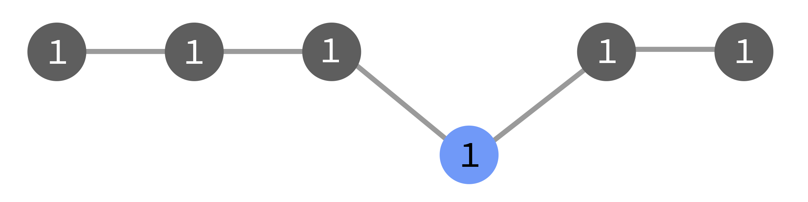

Concurrent Flows
Added in version 8.0.0.
In Cylc, a flow is a single self-consistent run through the workflow graph from some initial task(s).
As a flow advances, upcoming tasks run only if they have not already run in the same flow.
At start-up the scheduler automatically triggers the first flow from the start of the graph.
By default, manually triggered tasks “belong to” the existing flow(s), but you can also choose to start new flows by triggering tasks anywhere in the graph.
Note
A flow does not have to be contiguous in the graph because different graph branches can evolve at different rates, and tasks can be manually triggered anywhere in the graph.
See below for uses, and an example, of concurrent flows.
Note
Flows merge where (and if) tasks collide in the n=0 window. Downstream of a merge, tasks are considered to belong to all of their constituent flows.
Flow Numbers
Flows are identified by numbers passed down from parent task to child task in the graph.
Flow number 1 is triggered automatically by cylc play at scheduler
start-up. The next flow started by manual triggering
gets the number 2, then 3, and so on.
Tasks can carry multiple flow numbers as a result of flow merging.
Note
Flow numbers are not yet exposed in the UI, but they are logged with task events in the scheduler log.
Triggering & Flows
By default, manual triggering (with cylc trigger or the UI) starts a new
front of activity in current flows.
But it can also start new flows and trigger flow-independent single tasks.
In the diagrams below, the grey tasks run in the original flow (1), and the
blue ones run as a result of a manual triggering event. They may be triggered
as part of flow 1, or as a new flow 2, or with no flow number.
- Triggering in Current Flows
cylc trigger [--wait] IDThis is the default action. The triggered task gets all current active flow numbers. Subsequently, each of those flows will consider the task to have run already.
Ahead of active flows this starts a new front of activity for the existing flows, which by default can continue on without waiting for them to catch up:
With
--wait, action downstream of the triggered task is delayed until the first flow catches up:Behind active flows the triggered task will run, but nothing more will happen if any of the original flows already passed by there:
- Triggering in Specific Flows
cylc trigger --flow=1,2 IDThis triggers the task with flow numbers
1and2.The result is like the default above, except that tasks in the new front belong only to the specified flow(s), regardless of which flows are active at triggering time.
- Triggering a New Flow
cylc trigger --flow=new IDThis triggers the task with a new, incremented flow number.
The new flow will re-run tasks that already ran in previous flows:
- Triggering a Flow-Independent Single Task
cylc trigger --flow=none IDThis triggers a task with no flow numbers.
It will not spawn children, and other flows that come by will re-run it.
- Triggering with No Active Flows
cylc trigger [--wait] IDBy default, triggered tasks will be given the flow numbers of the most recent active tasks. This can happen, for instance, if you restart an already-completed workflow and then manually trigger a task in it. The task’s flow number will be the same as if you had triggered it just before the workflow completed.
- Special Case: Triggering
n=0(active tasks) Active tasks already have flow membership assigned. Flow numbers are inherited, on entering the active window, from parent (upstream) tasks in the graph.
Triggering a task with a submitted or running job has no effect (it is already triggered).
Triggering other active tasks, including those with incomplete outputs, queues them to run with their existing flow numbers.
Flow Merging in n=0
If a task spawning into the n=0 window finds another instance of itself (same task ID) already there, the two will merge and carry both (sets of) flow numbers forward. Downstream tasks will belong to both flows.
Flows merge because every active task must have a unique ID. However, merging is also useful: it allows a simpler single flow to continue downstream of multi-flow interventions.
If the original task instance has a final status (and has been retained in the n=0 window with incomplete outputs) the merged task will be reset to run again without manual intervention.
Stopping Flows
By default, cylc stop halts the workflow and shuts the scheduler down.
It can also stop specific flows: cylc stop --flow=N removes the flow number
N from active tasks. Tasks with no remaining flow
numbers will not spawn downstream activity. If there are
no active flows left, the scheduler shuts down.
Some Use Cases
- Running Tasks Ahead of Time
To run a task within the existing flow(s) even though its prerequisites are not yet satisfied, just trigger it. Use
--waitif you don’t want the new flow front to continue immediately. Triggered task(s) will not re-run when the main front catches up.- Regenerating Outputs Behind a Flow
To re-run a sub-graph (e.g. because the original run was affected by a corrupt file), just trigger the task(s) at the top of the sub-graph with
--flow=new.You may need to manually stop the new flow if it leads into the main trunk of the graph, and you do not want it to carry on indefinitely.
- Rewinding a Workflow
To rewind the workflow to an earlier point, perhaps to regenerate data and/or allow the workflow to evolve a new path into the future, trigger a new flow at the right place and then stop the original flow.
- Test-running Tasks in a Live Workflow
You can trigger individual tasks as many times as you like with
--flow=none, without affecting the workflow. The task submit number will increment each time.- Processing Flow-Specific Data?
Flow numbers are passed to job environments, so it is possible for tasks to process flow-specific data. Every task would have to be capable of processing multiple datasets at once, however, in case of flow merging. Generally, you should use cycling for this kind of use case.
Example: Rerun a Sub-Graph
The following cycling workflow runs a task called model in
every cycle, followed by a postprocessing task, two product-generating tasks,
and finally a task that publishes results for the cycle point:
[scheduling]
cycling mode = integer
initial cycle point = 1
[[graph]]
P1 = model[-P1] => model => post => prod1 & prod2 => publish
Let’s say the workflow has run to cycle 8, but we have just noticed that a corrupted ancillary file resulted in bad products at cycle 5.
To rectify this we could fix the corrupted file and trigger a new flow at
5/post:
cylc trigger --flow=new <workflow_id>//5/post
The new flow will regenerate and republish cycle 5 products before naturally coming to a halt, because the triggered tasks do not feed into the next cycle.
Meanwhile, the original flow will carry on unaffected, from cycle point 8.